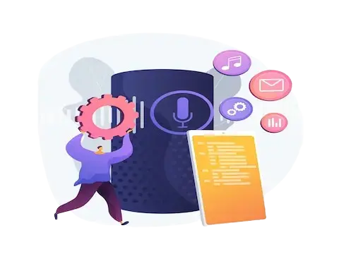
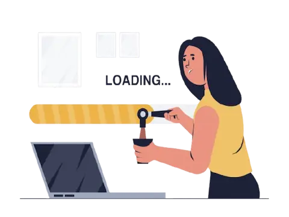
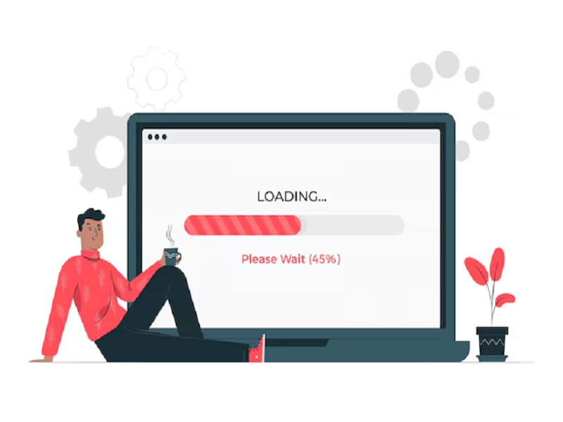
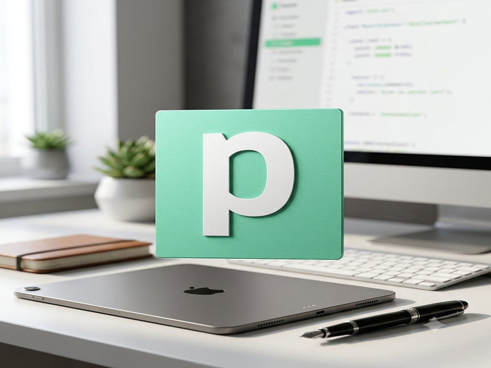
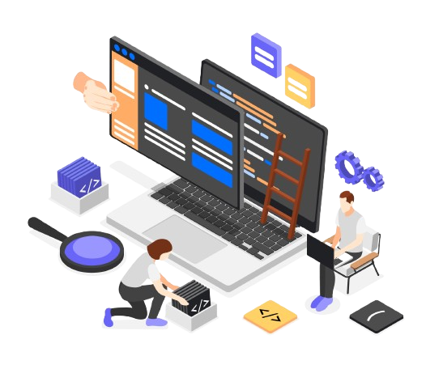

El secreto para que tus clientes no abandonen tu web
Consejos prácticos para reducir el abandono y mejorar la retención....
Leer más sobre el secreto para retener clientesEstructuro y optimizo plataformas digitales para garantizar el crecimiento e integración de tu negocio.
Desarrollo sitios web corporativos y marcas personales utilizando WordPress como gestor de contenidos autogestionable, adaptado 100% a tus necesidades.
Configuración de pasarelas de pago, control de inventarios e integraciones. Diseños estables para ofrecer una experiencia de compra segura.
Cuando las plantillas o soluciones genéricas limitan tu crecimiento, desarrollo sistemas únicos utilizando la tecnología adecuada para resolver los retos específicos de tu lógica de negocio.
Conexión e integración de herramientas y flujos de trabajo del día a día (CRMs, Google Sheets, formularios, APIs, etc.) para reducir costes operativos y erradicar tareas manuales.
Traslado de plataformas hacia entornos de hosting e infraestructura optimizados, garantizando cero pérdida de datos, resguardo del posicionamiento SEO y máxima estabilidad en el proceso.
Diagnóstico profundo de velocidad (Core Web Vitals) y seguridad. Optimizo el rendimiento para cargas instantáneas e implemento monitoreo continuo para mantener tu plataforma protegida.
Actualmente estoy trabajando en nuevos proyectos desafiantes que pronto estarán disponibles.

Optimización y conversión de flujos de contenido multimedia en activos digitales.
Cotizar solución similar
Reestructuración técnica de activos web para mejorar la carga y la experiencia del usuario.
Solicitar auditoría webTienda virtual autogestionable de pagos y gestión de catálogo.
Cotizar proyecto similarTransformemos tu visión en una herramienta digital que impulse tu crecimiento.
Artículos que te ayudan a entender los pilares lógicos y técnicos detrás de una plataforma exitosa.
Consejos prácticos para reducir el abandono y mejorar la retención....
Leer más sobre el secreto para retener clientesCómo elegir colores que transmitan confianza y conversión....
Leer más sobre la psicología del color
Qué pasa en esos primeros 5 segundos y cómo mejorarlos....
Leer más sobre la anatomía de una carga web
Descubre cómo crear arquitecturas de backend con Node.js en Pipedream...
Leer más sobre cómo optimizar un flujo de automatizaciones en Pipedream
Me dedico a impulsar negocios a través de la tecnología mediante dos pilares fundamentales:
Todo lo que necesitas saber antes de consolidar tu infraestructura digital
El plazo depende de los requerimientos del sistema. Una estructura estándar puede estar lista entre 1 y 2 semanas, mientras que los desarrollos a la medida con integraciones o automatizaciones complejas conllevan una planificación detallada basada en objetivos.
Sí. Si no dispones de un proveedor de alojamiento, puedo asesorarte para seleccionar entornos de hosting optimizados para alta velocidad o incluir la configuración de la infraestructura técnica dentro de la propuesta de tu proyecto.
Conectando tus herramientas diarias (como formularios web, CRMs y plataformas de mensajería) para eliminar tareas repetitivas. Esto reduce errores humanos, ahorra horas de trabajo semanales y te permite responder a tus clientes potenciales de forma instantánea.
La monitorización debe ser continua, complementada con un mantenimiento profundo mensual. De esta forma aseguro de que el código, la base de datos y la velocidad de carga (Core Web Vitals) permanezcan en su punto óptimo de conversión las 24 horas.
Ejecuto un diagnóstico técnico profundo para identificar la raíz de los errores (incompatibilidades, inyecciones de código o fallos de servidor) y aplico soluciones sólidas que no solo corrigen el problema actual, sino que previenen fallos futuros.
Puedes iniciar el contacto a través del formulario web o directamente por WhatsApp. Coordinaremos una evaluación inicial de tus necesidades operativas para estructurar una propuesta técnica y económica completamente personalizada.
Escríbeme y cuéntame sobre las necesidades o procesos de tu negocio.
Consultoría y desarrollo remoto a nivel internacional, con base en Caracas, Venezuela.